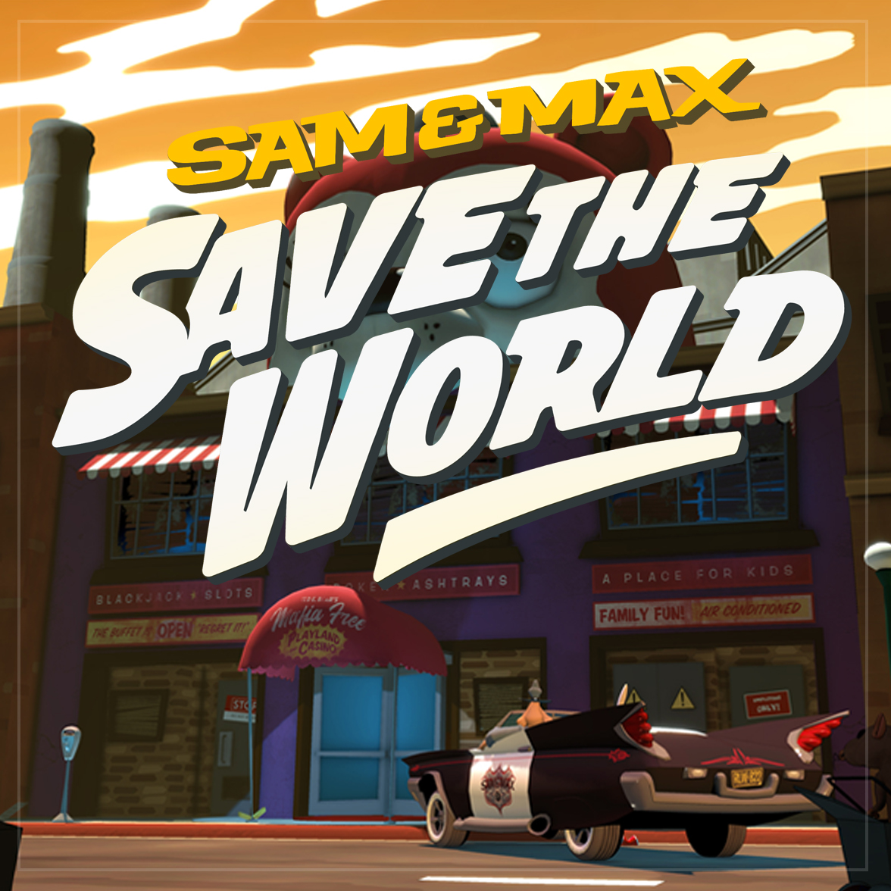
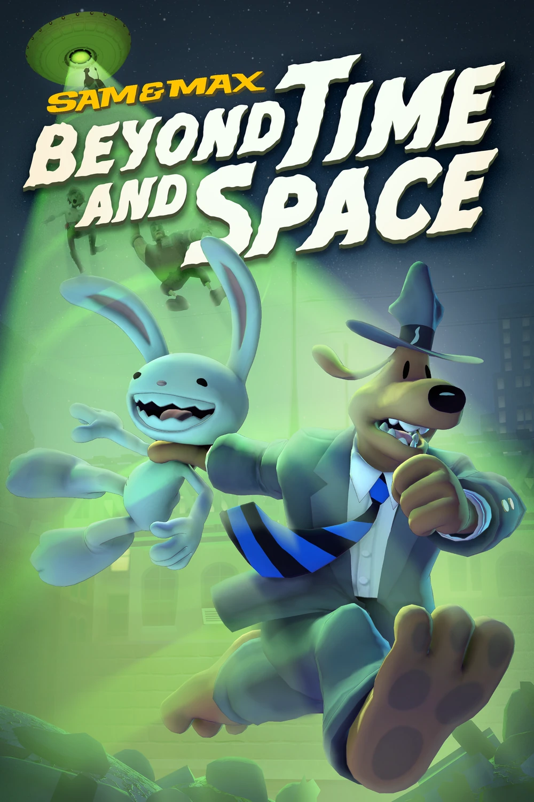
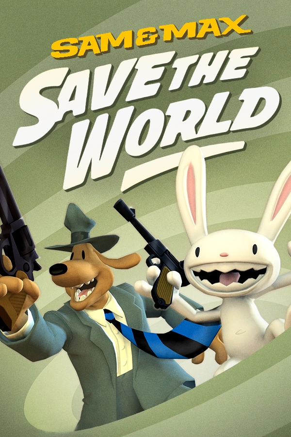
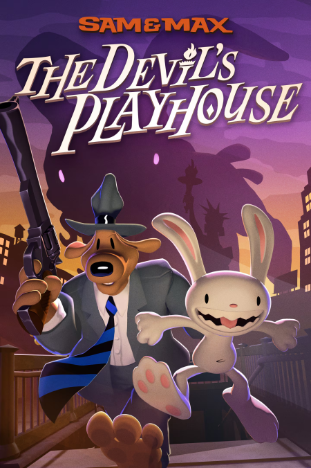
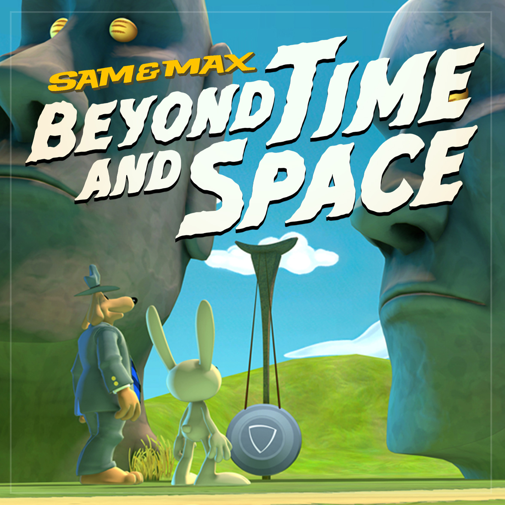
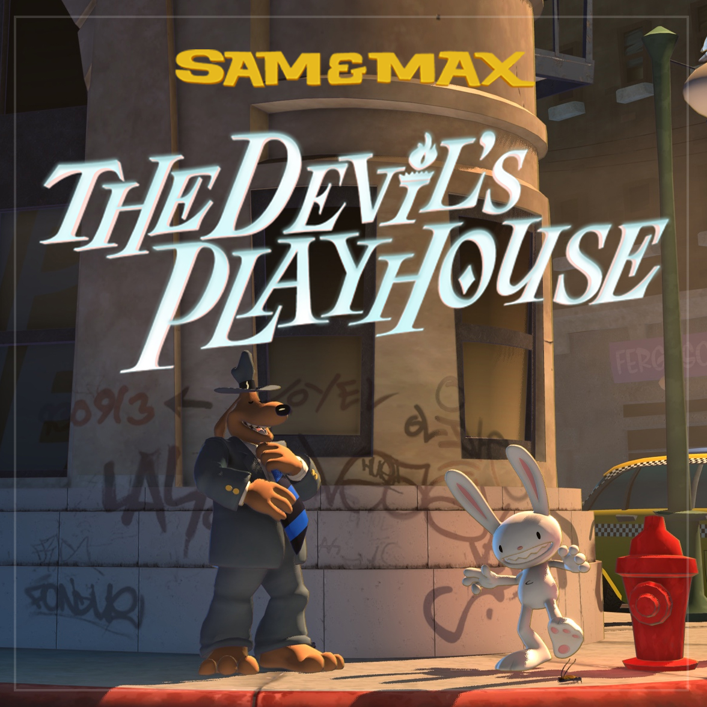

Sam & Max (también conocida como «La Trilogía de Telltale» por los fans) es una serie episódica de videojuegos de Telltale Games . A lo largo de sus cuatro años de duración, la Trilogía de Telltale abarcó tres temporadas completas de juegos, que suman un total de 16 episodios de aventuras gráficas.

Sam and max: Beyond Time and Space
Todo comienza cuando un robot gigante enviado por un supuesto pez dorado los ataca. A partir de ahí, el dúo debe lidiar con fuerzas del orden galáctico, volcanes enojados, vampiros deprimidos y hasta descender al mismísimo Infierno para salvar a sus vecinos y amigos.
